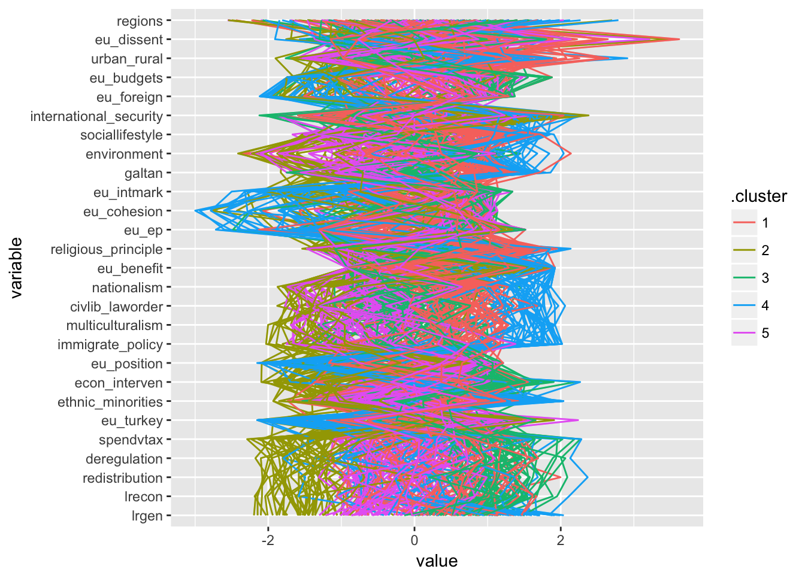

An EDA example applying the k-means clustering and t-SNE dimension reduction techniques to the 2014 Chapel Hill Expert Survey data on surveys on the party positioning of European political parties on integration, ideology and policy issues.
Load the necessary packages
library("tidyverse")## Loading tidyverse: ggplot2
## Loading tidyverse: tibble
## Loading tidyverse: tidyr
## Loading tidyverse: readr
## Loading tidyverse: purrr
## Loading tidyverse: dplyr## Conflicts with tidy packages ----------------------------------------------## filter(): dplyr, stats
## lag(): dplyr, statslibrary("rio")
library("broom")
library("Rtsne")
library("stringr")Load the CHES data
dataCH <- import("data/2014_CHES.csv")For the cluster and t-SNE algorithms we want to keep only those numeric variables related to party positioning (vars) and some party id variables:
vars <- c("eu_position", "eu_dissent", "eu_benefit", "eu_ep", "eu_intmark", "eu_cohesion",
"eu_foreign", "eu_turkey", "eu_budgets", "lrgen", "lrecon", "galtan",
"spendvtax", "deregulation", "redistribution", "econ_interven",
"civlib_laworder", "sociallifestyle", "religious_principle",
"immigrate_policy", "multiculturalism", "urban_rural", "environment",
"regions", "international_security", "ethnic_minorities", "nationalism"
)
dataCH_vars <- dataCH %>% select(party_id, cname, party_name, one_of(vars)) %>%
ungroup() %>%
drop_na()First consider the k-Means algorithm
We could estimate it for a given set of clusters, e.g. k = 4.
centers <- 4
kmeans(select(dataCH_vars, -party_name, -cname, -party_id),
centers = centers, nstart = 5)## K-means clustering with 4 clusters of sizes 44, 57, 80, 78
##
## Cluster means:
## eu_position eu_dissent eu_benefit eu_ep eu_intmark eu_cohesion
## 1 2.389194 1.996863 2.568869 2.968393 2.908017 3.705185
## 2 4.153943 2.773070 1.962211 4.958948 3.727671 5.204085
## 3 5.493400 2.593822 1.371643 5.071292 5.868365 5.882745
## 4 6.047056 2.536206 1.180205 5.610004 5.910560 6.029702
## eu_foreign eu_turkey eu_budgets lrgen lrecon galtan spendvtax
## 1 2.688768 1.948783 1.893197 7.911157 5.264667 8.693264 5.321761
## 2 3.571175 4.250593 2.587423 2.226722 1.982705 2.530869 2.220373
## 3 5.354125 3.745708 4.336003 6.482457 6.431360 6.632375 6.198679
## 4 5.729606 4.652448 4.694968 4.922581 5.360985 3.382431 5.191990
## deregulation redistribution econ_interven civlib_laworder
## 1 4.501117 4.872223 4.679315 8.517753
## 2 1.978634 1.807453 1.889916 2.513582
## 3 6.355401 6.105061 6.117006 6.274532
## 4 5.686451 4.852671 5.312217 4.058898
## sociallifestyle religious_principle immigrate_policy multiculturalism
## 1 8.447102 6.817141 8.521878 8.804171
## 2 1.964417 1.529283 2.723642 2.898950
## 3 6.224240 6.362533 6.220881 6.429315
## 4 2.916684 2.893607 4.250413 3.990154
## urban_rural environment regions international_security
## 1 6.499703 6.899471 5.274688 6.159152
## 2 3.651410 2.909611 4.080733 7.004876
## 3 5.572410 6.199997 4.537436 3.762982
## 4 3.745920 5.095516 4.488529 4.166040
## ethnic_minorities nationalism
## 1 8.540225 8.894804
## 2 2.290810 3.478023
## 3 5.838546 6.394414
## 4 3.685077 3.816403
##
## Clustering vector:
## 1 2 3 4 5 6 7 8 9 10 11 12 13 14 15 16 17 18
## 2 2 2 2 4 4 4 3 3 4 1 2 1 4 4 3 2 3
## 19 20 21 22 23 24 25 26 27 28 29 30 31 33 34 35 36 37
## 2 1 2 4 3 4 4 2 2 3 1 1 2 4 3 2 2 1
## 38 39 40 41 42 43 44 45 47 48 49 50 51 52 53 54 55 56
## 1 4 2 1 4 3 2 3 4 2 2 3 2 4 2 2 4 2
## 57 58 59 60 61 62 63 64 65 66 67 68 69 70 71 72 73 74
## 4 4 2 3 1 1 3 3 3 3 2 2 3 3 4 2 2 2
## 75 76 77 78 79 80 81 82 83 84 85 86 88 89 90 91 92 93
## 2 2 1 3 3 3 4 2 3 1 2 3 3 3 4 3 4 2
## 94 95 96 97 98 99 100 101 102 103 104 105 106 107 108 109 110 111
## 1 2 3 1 2 4 3 4 4 4 2 2 1 2 3 4 3 2
## 112 113 114 115 116 117 118 119 120 121 122 123 124 125 126 127 128 129
## 3 2 3 1 2 4 1 1 4 3 3 2 1 4 4 1 2 2
## 130 131 132 133 134 135 136 137 138 139 140 141 142 143 144 145 146 147
## 4 4 4 3 2 1 4 2 4 4 4 1 1 4 3 4 1 1
## 148 149 150 151 152 153 154 155 156 157 158 159 160 161 162 163 164 165
## 4 4 3 2 3 4 3 4 1 3 3 4 4 4 4 3 4 1
## 166 167 168 169 170 171 173 174 175 176 177 178 179 180 181 182 183 184
## 1 2 4 4 2 3 4 4 3 3 4 3 3 3 1 4 4 1
## 185 186 187 188 189 190 191 192 193 194 195 196 197 198 199 200 201 202
## 4 4 1 3 4 1 3 1 3 3 3 3 4 3 1 3 3 3
## 203 204 205 206 207 208 209 210 211 212 213 214 215 216 217 218 219 220
## 3 3 3 1 4 4 3 3 3 3 4 3 3 4 4 2 4 4
## 221 222 223 224 225 226 227 228 229 230 231 232 233 234 235 236 238 239
## 3 4 1 4 4 4 1 1 2 1 2 3 2 1 2 4 3 2
## 240 241 242 244 245 246 247 248 249 250 251 252 254 255 256 257 258 259
## 1 3 4 1 2 3 3 2 4 3 1 1 3 4 3 3 4 4
## 260 263 264 265 266 267 268
## 4 3 3 2 3 3 4
##
## Within cluster sum of squares by cluster:
## [1] 2160.417 2809.867 3422.399 3342.377
## (between_SS / total_SS = 59.4 %)
##
## Available components:
##
## [1] "cluster" "centers" "totss" "withinss"
## [5] "tot.withinss" "betweenss" "size" "iter"
## [9] "ifault"But let’s be a little more thorough about this. We will run k-means means for cluster sizes of 4 to 10. Instead of a for loop, I’ll use the map functional, which will run kmeans for each value of centers, and return a list of kmeans object.
ches_kmeans <- function(k) {
kmeans(select(dataCH_vars, -party_name, -cname, -party_id),
centers = k, nstart = 5)
}
centers <- 2:10
mod_kmeans <- map(centers, ches_kmeans)This returns a list of the same length as centers:
class(mod_kmeans)## [1] "list"in which each element is a kmeans object,
map_chr(mod_kmeans, class)## [1] "kmeans" "kmeans" "kmeans" "kmeans" "kmeans" "kmeans" "kmeans" "kmeans"
## [9] "kmeans"For example, the first object is
str(mod_kmeans[[1]])## List of 9
## $ cluster : Named int [1:259] 2 2 2 2 1 1 2 1 1 2 ...
## ..- attr(*, "names")= chr [1:259] "1" "2" "3" "4" ...
## $ centers : num [1:2, 1:27] 4.58 5.15 2.34 2.73 1.73 ...
## ..- attr(*, "dimnames")=List of 2
## .. ..$ : chr [1:2] "1" "2"
## .. ..$ : chr [1:27] "eu_position" "eu_dissent" "eu_benefit" "eu_ep" ...
## $ totss : num 28910
## $ withinss : num [1:2] 10377 7628
## $ tot.withinss: num 18005
## $ betweenss : num 10905
## $ size : int [1:2] 141 118
## $ iter : int 1
## $ ifault : int 0
## - attr(*, "class")= chr "kmeans"I will compare the different clustering algorithms by the between sum of squares divided by total sum of squares.
kmeans_ss <- tibble(ncluster = seq_along(mod_kmeans),
ss = map_dbl(mod_kmeans, function(x) x$betweenss / x$totss))
kmeans_ss %>%
ggplot(aes(x = ncluster, y = ss)) +
geom_point() + geom_line() +
scale_x_continuous(breaks = unique(kmeans_ss$ncluster))Generally in clustering and other dimension reduction algorithms, a good choice for the number of clustering or dimensions is the “elbow” of the curve, where the initial sleep improvment in performance starts to level off. In this case, five clusters seems to be a good choice.
To better understand the composition and meaning of these clusters I’ll print the parties in each cluster:
augment(mod_kmeans[[4]], dataCH_vars) %>%
group_by(.cluster) %>%
summarise(parties = str_c(party_name, " (", cname, ")", collapse = ", ")) %>%
knitr::kable()| .cluster | parties |
|---|---|
| 1 | KF (den), CDU (ger), CSU (ger), ND (gre), PP (spa), CiU (spa), CC (spa), UMP (fra), NC (fra), AC (fra), FF (ire), FG (ire), UDC (it), FI (it), SVP (it), CD (it), NCD (it), CDA (net), CU (net), CONS (uk), PP (por), MPT (por), OVP (aus), KESK (fin), KD (fin), KDU-CSL (cze), LKS (lat), ZZS (lat), NSL (lat), LRA (lat), TS-LKD (lith), LVZS (lith), LLRA (lith), TT (lith), PSL (pol), PR (pol), PSD (rom), PC (rom), UNPR (rom), Smer-SD (slo), SMK-MKP (slo), KDH (slo), OLaNO (slo), NOVA (slo), Siet (slo), SDS (sle), SLS (sle), NSI (sle), HDZ (cro), HSS (cro), AKP (tur), KrF (nor), CVP/PVC (swi), EVP/PEV (swi), BDP (swi), CSV (lux), EVROKO (cyp), DIKO (cyp), EDEK (cyp) |
| 2 | MR (bel), VLD (bel), CD&V (bel), N-VA (bel), V (den), LA (den), FDP (ger), C’s (spa), MODEM (fra), PRV (fra), SC (it), VVD (net), PSD (por), NEOS (aus), KOK (fin), RKP/SFP (fin), C (swe), FP (swe), M (swe), KD (swe), SDS (bul), DSB (bul), GERB (bul), DBG (bul), ODS (cze), TOP09 (cze), ANO2011 (cze), SVOBODNI (cze), IRL (est), ER (est), EVE (est), V (lat), LRLS (lith), PO (pol), PDL (rom), PNL (rom), UDMR (rom), PMP (rom), PLR (rom), SDKU-DS (slo), SaS (slo), MH (slo), HSLS (cro), H (nor), FDP/PLR (swi), PN (mal), DP (lux), DISY (cyp) |
| 3 | PS (bel), ECOLO (bel), Groen (bel), PVDA (bel), SF (den), EL (den), FolkB (den), Linke (ger), Piraten (ger), SYRIZA (gre), KKE (gre), IU (spa), BNG (spa), ICV (spa), Amaiur (spa), Podemos (spa), PCF (fra), EELV (fra), PG (fra), Ens (fra), GP (ire), SF (ire), SP (ire), PBPA (ire), RC (it), SEL (it), M5S (it), SP (net), PvdD (net), GREEN (uk), CDU (por), BE (por), GRUNE (aus), VAS (fin), V (swe), MP (swe), FI (swe), KSCM (cze), ZL (sle), HL-SR (cro), ORaH (cro), HDP (tur), SV (nor), SP/PS (swi), GPS/PES (swi), AKEL (cyp) |
| 4 | VB (bel), PP (bel), DF (den), NPD (ger), AfD (ger), LAOS (gre), ANEL (gre), XA (gre), FN (fra), MPF (fra), LN (it), Fdl (it), SGP (net), PVV (net), UKIP (uk), FPO (aus), BZO (aus), TeamStronach (aus), PS (fin), SD (swe), VMRO-BND (bul), ATAKA (bul), NFSB (bul), BBT (bul), USVIT (cze), Fidesz (hun), JOBBIK (hun), DK (lith), PiS (pol), KNP (pol), SP (pol), PP-DD (rom), SNS (slo), HDSSB (cro), HSP (cro), HSP-AS (cro), MHP (tur), Sp (nor), SVP/UDC (swi), EDU/UDF (swi), LdT (swi) |
| 5 | SPA (bel), cdH (bel), FDF (bel), SD (den), RV (den), SPD (ger), Grunen (ger), PASOK (gre), Potami (gre), DIMAR (gre), PSOE (spa), EA (spa), ERC (spa), UpyD (spa), PS (fra), PRG (fra), Lab (ire), PD (it), PvdA (net), D66 (net), GL (net), 50PLUS (net), LAB (uk), LIBDEM (uk), SNP (uk), PLAID (uk), PS (por), SPO (aus), SDP (fin), VIHR (fin), SAP (swe), PIRAT (swe), BSP (bul), DPS (bul), ABV (bul), CSSD (cze), SZ (cze), EK (est), SDE (est), EER (est), MSZP (hun), LMP (hun), E14 (hun), DK (hun), SDPS (lat), LSDP (lith), DP (lith), SLD (pol), RP (pol), SD (sle), DeSUS (sle), SMC (sle), ZaAB (sle), PS (sle), SDP (cro), HNS (cro), IDS (cro), CHP (tur), AP (nor), V (nor), GLP/PVL (swi), PL (mal), GRENG (lux), LSAP (lux), KOP (cyp) |
A visual method to hep understand multidimensional data is a parallel coordinates plot. The function ggparcoord in the package GGally can be used to produce them. In the plot, each line represents an observation, and the lines are colored by their cluster from the previous k-means results.
require("GGally")## Loading required package: GGally##
## Attaching package: 'GGally'## The following object is masked from 'package:dplyr':
##
## nasaggparcoord(augment(mod_kmeans[[4]], dataCH_vars),
columns = vars, groupColumn = ".cluster",
order = "anyClass", alphaLines = 0.3) +
geom_line() +
coord_flip()
The t-SNE algorithm is a relatively new method which works well for visualizing high-dimensional data.
library("Rtsne")
mod_tsne <- Rtsne(select(select_if(dataCH_vars, is.numeric), -party_id) %>%
mutate_all(scale),
dims = 2,
perplexity = 30)I’ll plot the parties on the t-SNE 2-dimensions, coloring them by their CHES left-right location in order to help interpretation:
library("viridis")
bind_cols(dataCH_vars,
as_tibble(as.data.frame(mod_tsne$Y))) %>%
ggplot(aes(x = V1, y = V2, colour = lrgen, label = party_name)) +
geom_text(alpha = 1)